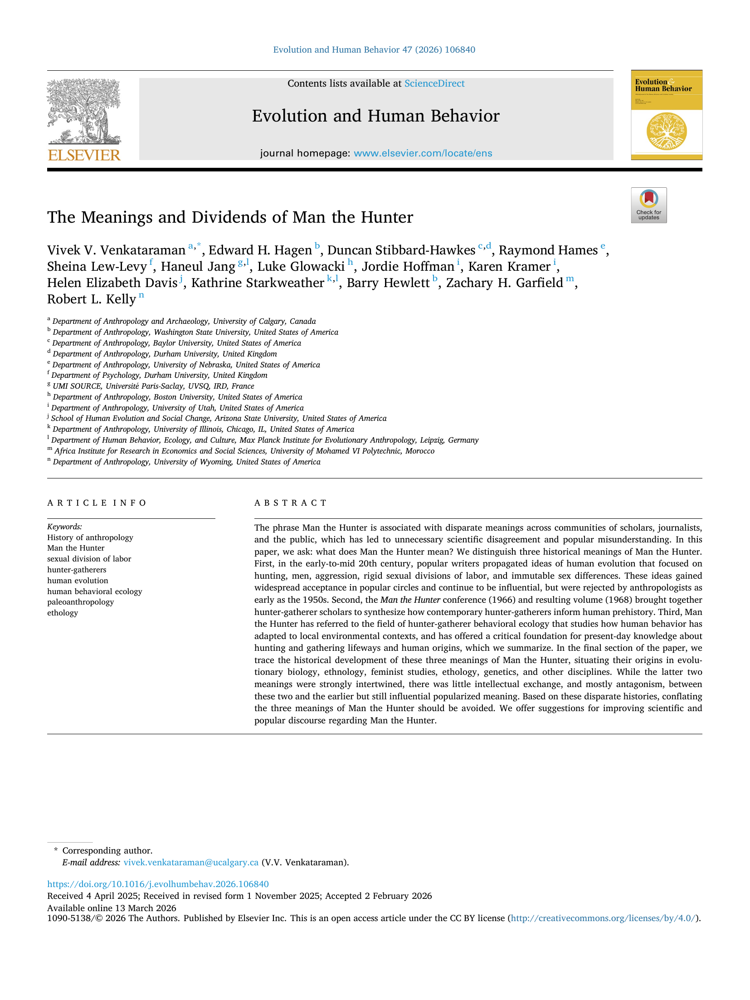
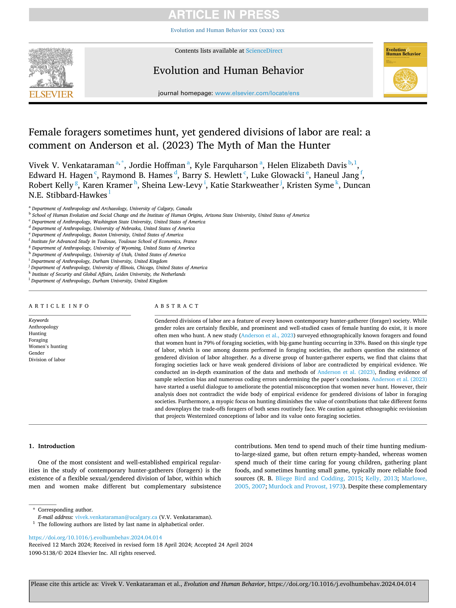
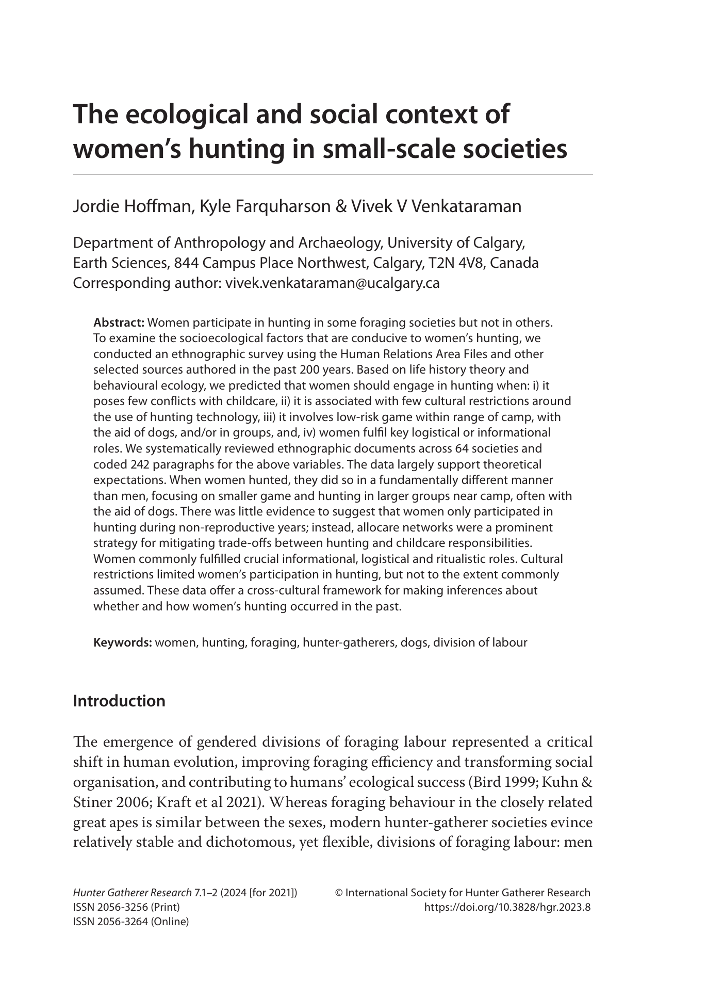

Jordie Hoffman
Anthropology | Machine Learning | Scientific Artist
About Me
I am a PhD student in the University of Utah's Anthropology Department working with Thomas S. Kraft to develop machine learning models that help us answer questions about topics ranging from culture to health and biology in humans and our closest primate relatives.
Current Projects

Primate Aging Model
Non-human primates are an important model system for the study of human health and aging, but many species are threatened or endangered and thus scientists cannot collect invasive biospecimens to study key biomarkers. We propose a non-invasive biomarker of aging using machine learning trained on serial photographs of chimpanzees with known birthdates and life histories. This approach enables us to model biological aging trajectories and compare them with chronological age to determine how social stress and networks influence the speed of longitudinal aging trajectories, a critical question for understanding the social determinants of health in our closest relatives.

Testing the Inactivity Mismatch Hypothesis: Quantifying Resting Postures
The "Inactivity Mismatch Hypothesis" (IMH) proposes that resting postures, which vary widely across human societies, are more critical for health outcomes than the total time spent resting itself. Although anthropologists have been interested in quantifying cultural differences in habitual postures since the 1950's, older studies have lacked rigorous quantitative methodologies to do this on a large scale. We seek to use machine learning models to extract 3D poses from candid global photography using computer vision and lab testing to determine how each posture engages specific muscle groups and impacts energy expenditure.
Publications
Evaluating performance bias in face-to-BMI vision transformer models across diverse human populations
Computer vision models that estimate body mass index (BMI) from photographs offer a promising, non-invasive, and low-cost tool for telemedicine, emergency care, and large-scale global health research. However, the majority of published models rely on a limited number of training datasets, all drawn from urbanized, market-integrated populations with measurements that are self-reported, or estimated. While limited studies highlight risks for ethnic bias in current facial analysis models, it remains unknown whether face-to-BMI models fail to generalize across diverse global populations. To test for this, we trained a Vision Transformer model using paired photographs and BMI measurements collected by anthropologists in four morphologically and geographically distinct Indigenous populations. We found that these models are most accurate when trained on the same populations they will be assessing. When that specific data is unavailable, training on a broad cross-cultural dataset can provide a strong alternative. Our findings indicate that diverse training datasets are essential for developing accurate face-to-BMI models.



Scientific Illustrations

Genetic and behavioural repertoires support olfactory communication in wild capuchin monkeys. Akhtar, M. S., Kulick, N. K., Poirier, A. C., Hamou, H., Galán-Plana, C. F., Romero Morales, S., Cheves Hernandez, S., Benson, G. W., Chaves-Cordero, C., Hernández-Rojas, R., Villero, V., Crofoot, M., Bergman, T., Orkin, J. D., Barrett, B. J., Tung, J., Jack, K. M., & Melin, A. D. (2026).

Non-Invasive Measures of DNA Methylation Capture Molecular Aging in Wild Capuchin Monkeys. Sadoughi, B., Hernández-Rojas, R., Hamou, H., Lopez, R., Mah, M., Slikas, E., Simmons, S. M. V., Orkin, J. D., Higham, J. P., Brosnan, S. F., et al. (2026). Molecular Ecology, 35(14), e70468.

Wild capuchin monkeys as a model system for investigating the social and ecological determinants of ageing. Campos, F. A., Wikberg, E. C., Orkin, J. D., Park, Y., Snyder-Mackler, N., Cheves Hernandez, S., ... & Melin, A. D. (2024). Philosophical Transactions B, 379(1916), 20230482.

Smell throughout the life course. Poirier, A. C., & Melin, A. D. (2024). Evolutionary Anthropology: Issues, News, and Reviews, 33(4), e22030.